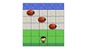

-
Build a Portfolio
Developed a personal portfolio page using HTML, CSS, and Bootstrap.
-
Interactive Resume
Using jQuery, developed an interactive resume application that reads all data from a JSON file
-

Classic Arcade Game Clone
Developed a HTML5 Canvas powered video game, developed using the best practices in Object Oriented JavaScript.
-
Cam's Pizzeria
Who wants a performant pizza?

Manish Bisht
FrontEnd Web Developer